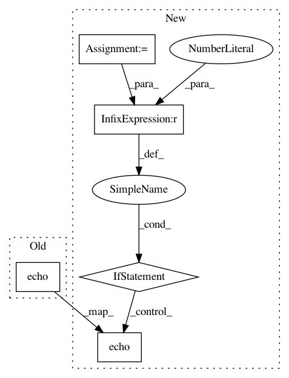

988f2d40cb058f9540a0e45083acad6a564b28f2,kraken/kraken.py,,recognizer,#Any#Any#Any#Any#Any#Any#,69
Before Change
it = rpred.rpred(model, im, bounds, pad)
preds = []
for pred in it:
click.echo(u"\r\033[?25lProcessing\t{}".format(next(spinner)), nl=False)
preds.append(pred)
click.secho(u"\b\u2713", fg="green", nl=False)
click.echo("\033[?25h\n", nl=False)
After Change
except IOError as e:
raise click.BadParameter(e.message)
ctx = click.get_current_context()
if not lines:
lines = input
with open_file(lines, "r") as fp:
bounds = [(int(x1), int(y1), int(x2), int(y2)) for x1, y1, x2, y2
in csv.reader(fp)]
it = rpred.rpred(model, im, bounds, pad)
preds = []
st_time = time.time()
for pred in it:
if ctx.meta["verbose"] > 0:
click.echo(u"[{:2.4f}] {}".format(time.time() - st_time, pred.prediction))
else:
click.echo(u"\r\033[?25lProcessing\t{}".format(next(spinner)), nl=False)
preds.append(pred)
if ctx.meta["verbose"] > 0:
click.echo(u"Execution time: {}s".format(time.time() - st_time))
else:
In pattern: SUPERPATTERN
Frequency: 3
Non-data size: 5
Instances
Project Name: mittagessen/kraken
Commit Name: 988f2d40cb058f9540a0e45083acad6a564b28f2
Time: 2015-09-14
Author: mittagessen@l.unchti.me
File Name: kraken/kraken.py
Class Name:
Method Name: recognizer
Project Name: mittagessen/kraken
Commit Name: 167641d61ab42c8cd37459dd97d8939e35a859a8
Time: 2018-03-14
Author: mittagessen@l.unchti.me
File Name: kraken/ketos.py
Class Name:
Method Name: spin
Project Name: mittagessen/kraken
Commit Name: 167641d61ab42c8cd37459dd97d8939e35a859a8
Time: 2018-03-14
Author: mittagessen@l.unchti.me
File Name: kraken/kraken.py
Class Name:
Method Name: spin